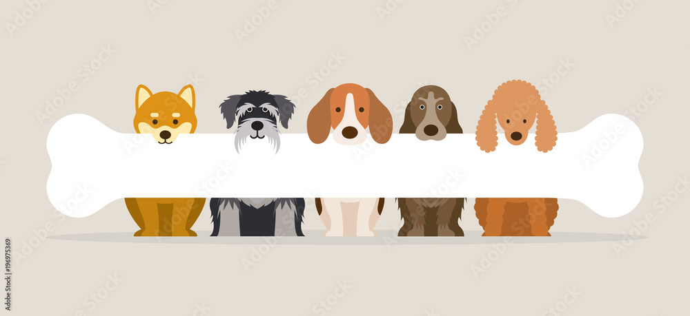

Our mission is to make your pets feel and look loved.

Services:
Bathing
Trimming
Nail Filing
Popular Trimmings:
Teddy Bear Cut
Keeps a rounded, fluffy shape on top of head and entire face.
Varies in style and length to suit the dog's size, head shape, and coat, as well as ear prefernce.
Lion Cut
Everything but the head and face is shaved. Usually for pets who have severe matting, shedding or allergies.
Kennel Cut
Hair is kept short around your dog's body, including the face.
Typically, it's shorter than other cuts, which can make it an ideal option for busy pet owners
or pets who don't love the experience of getting a haircut.